Blogs - AdamKinney
Blogs - AdamKinney
BugCamSmash in Action! [0:01:31] [2009/12/04]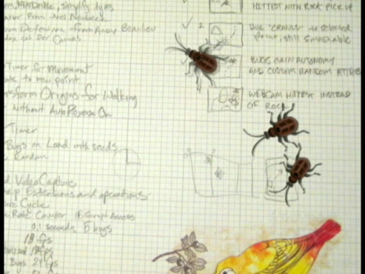
At PDC09, we released Silverlight 4 Beta and announced one of the availability of, one of the most requested features, Web Cam Support.
Wanting to have fun with the new feature, I thought of a fun…
U.S. Army using Silverlight for Resourcing Troops [0:11:57] [2009/09/02]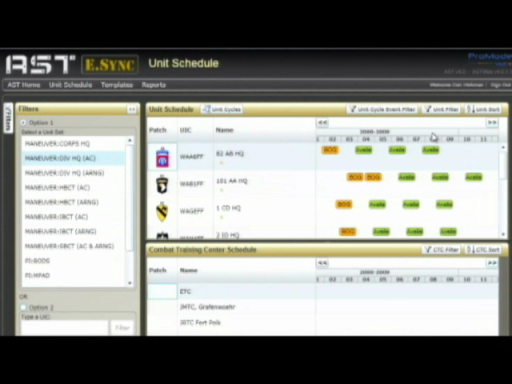Dan Hickman from ProModel tells the story of converting their Predictive Troop Resourcing application for the U.S. Army from a Windows Forms application to a Silverlight-based application.
Reusing…
WPF 3.5 SP1 Tools with Erick Ellis and Mark Wilson-Thomas [0:13:27] [2008/05/17]Erick Ellis and Mark Wilson-Thomas talk about what's new in the WPF editor for Visual Studio in .NET 3.5 SP1. Topics include faster performance both from WPF and optimizations of their own, new cool…
WPF 3.5 SP1 App Model with Jennifer Lee [0:17:31] [2008/05/16]I spoke with Jennifer Lee about what's new in the Application Model realm for WPF 3.5 SP1. Topics include the improved cold start, splash screen and a demonstration of HTML and XBAPs using the new…
WPF 3.5 SP1 Performance with Adam Smith [0:33:57] [2008/05/15]Adam Smith and Tim Sneath discuss a wide array of improvements made in WPF 3.5 SP1 concerning performance. Topics include graphics, startup time and benefits gained from
the updated CLR. …
WPF 3.5 SP1 Deployment with Troy Martez [0:20:28] [2008/05/14]Troy Martez and Dr. Sneath go on a deep dive into the new client deployment options available in WPF 3.5 SP1. Interesting new features include the Client Profile (something like a "diet .NET…
WPF 3.5 SP1 Graphics with David Teitlebaum [0:22:07] [2008/05/13]You've heard all about the improvements and new features in WPF 3.5 SP1, now its time to see the new stuff. David Teitlebaum takes us on a tour of graphic applications that take advantage of the new…
Ian Ellison-Taylor and Kevin Gjerstad on WPF 3.5 SP1 [0:29:56] [2008/05/13]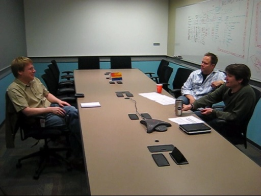
Dr. Sneath speaks with
Ian Ellison-Taylor and
Kevin Gjerstad about new improvements and features in WPF 3.5 Service Pack 1.
Topics of the conversation range from
Graphics, Deployment,…
ALT.NET Geek Code badge [2008/04/30]After visiting the ALT.NET Open Spaces Conference in Seattle Scott Hanselman followed through on one of the open ideas there and created the
ALT.NET Geek Code page. After selecting from the list o…
Christmas CoolWall [0:08:33] [2007/12/15]You may be familiar with the Top Gear CoolWall, but not all of us watch TV that comes from the UK. Sometimes those of us in the US just like the idea and make our version and stick Steve Carell in…
Usability Research at Microsoft [0:41:18] [2007/11/15]Last week, David Shadle and I met up with three gentlemen
Arnie Lund, UX Community lead for IT,
Monty Hammontree, Director of User Experience for Developer Products, and
Dennis Wixon, User…
Robby Ingebretsen : Designers, Developers and Integrators [0:28:48] [2007/11/03]You may be a developer who sometimes does layout or has to spend time slicing images to stuff into your UI. Or you may be a designer who wants to get that control to function a certain way, so much…
Xbox Friends Watch : Silverlight Sidebar Gadget [2007/10/25]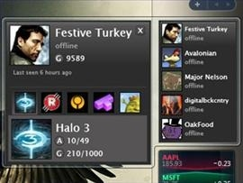Now that HALO 3 has been released, my Xbox 360 and I are hanging out together again, Xbox Live is in the picture too. Why? Best answer could be HALO 3 multiplayer mode, and what's better than multip…
Pascal Bourque - Building a rich datagrid in WPF [0:36:02] [2007/10/24]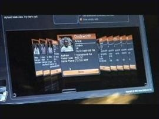Last week I met up with Pascal Bourque from Xceed. Pascal is senior developer who has been developing with WPF for two years. Xceed is a controls company famous for their
free WPF Datagrid.
We…
Beau Ambur: Developing a Silverlight application [0:37:53] [2007/09/25]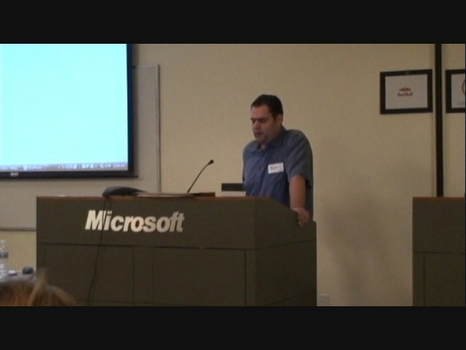Here is Beau Ambur's session from the SilverlightDevCamp in San Francisco. He walks us through his iPhone replica he made for MIX 07 UK and then
Top Banana, an app for editing videos with a very…
Tyler Ballance: live from the SilverlightDevCamp in San Francisco [0:08:44] [2007/09/19]This weekend I attended the
SilverlightDevCamp in San Francisco and met
R. Tyler Ballance of Slide.com. The DevCamp ran Friday night and then all day Saturday, but by the end of the first day…
Cider Beta 2 : Styling a WPF application with Blend and Cider [0:13:07] [2007/08/17]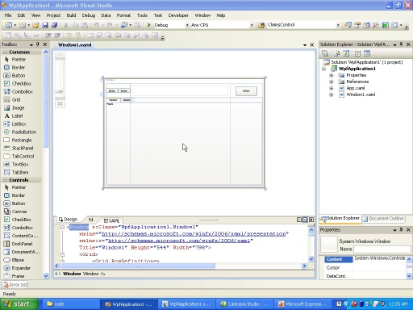
Brief walkthrough on using Blend to style a WPF application originally created with VS 2008 Cider designer; see how you can seamlessly go back and forth between the two tools to get the best out of…
Cider Beta 2 : Feature walkthrough [0:18:25] [2007/08/17]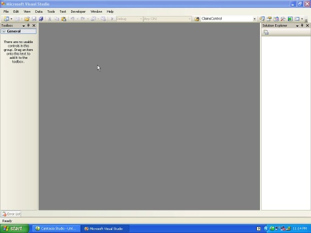
"Cider" is the codename for the WPF designer in Visual Studio 2008. This screencast covers some of the new features in Cider and walks you through building a small application to apply…
Kevin Moore: New Features in WPF 3.5 [0:54:42] [2007/08/09]
Although WPF is less than a year old, we’re already putting the finishing touches to an update that will add some neat features and improvements, improve internationalization support and increase…
Creating a Video with an Ad Image Overlay [2007/06/21]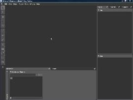In this screencast,
Tim Sneath shows you how you can use Expression Blend to overlay an image with alpha-channel on top of Silverlight video content; this is a great way to provide a non-intrusive…
MIX07: John Lam and the Dynamic Language Runtime [2007/05/02]Tim Heuer had a chance to sit down with
John Lam and Tomas Matousek from the Common Language Runtime team. John finally breaks his silence publically about what he has been working on since coming to…
Publishing Media Content to Silverlight Streaming Services [2007/05/01]This screencast shows how you can host media assets as part of a Silverlight application on the Silverlight Streaming globally-cached content distribution network.
Download the sample code
By cli…
Real-Time Data Update with Silverlight and Web Services [2007/05/01]This screencast demonstrates how a distributed application can be built with an ASP.NET middleware, and a Web services back end. The middleware consumes the Web service and uses it and a XAML templa…
Overlaying HTML and Silverlight Content [2007/05/01]While Silverlight v1 doesn’t support a full control suite, ASP.NET and HTML do, and in this example you will see how to use both in a Silverlight front end using Windowless mode. You will see how to…
Creating a Video Playlist with Silverlight and ASP.NET [2007/05/01]This screencast demonstrates a dynamic Silverlight front end, where different video playlists, stored in a SQL Server database, can be generated and rendered for different users. In addition to gene…
Using AJAX to Dynamically Update Silverlight Content [2007/05/01]This video demonstrates a simple notification system build using Silverlight, ASP.NET, AJAX and SQL Server. Silverlight is used at the front end to present a rich UI, which is asynchronously updated…
Delivering Parameterized Silverlight Content with Java [2007/05/01]This video demonstrates how J2EE can be used to generate XAML which is then delivered to a JSP Silverlight front end. A XAML Generator was written in Java, and this fronts the Northwind database. Qu…
Delivering Parameterized Silverlight Content with PHP [2007/05/01]This video demonstrates how PHP can be used to generate XAML which is then delivered to a Silverlight front end. A XAML Generator was written in PHP, and this fronts a MySQL database. Queries to the…
Delivering Parameterized Silverlight Content with ASP.NET [2007/05/01]This video demonstrates how ASP.NET can be used to generate XAML which is then delivered to a Silverlight front end. A XAML Generator was written in C#, and this fronts the Northwind database. Queri…
Animating Vector Art for Silverlight with Expression Blend Part II [2007/05/01]In this third part of a five-part series, we'll further explore the animation capabilities in Blend. To make the chicken cluck, we'll create a timeline as a resource that is invoked from JavaScript …
Animating Vector Art for Silverlight with Expression Blend Part I [2007/05/01]In this second of a five-part series, the animation tools of Blend are introduced. Using the chicken drawn in the earlier screencast, we'll add animation onto the stage using transforms, both a scal…
Creating Vector Art for Silverlight with Expression Blend [2007/05/01]In this first of a five-part series, you'll see how to use the drawing tools in Blend to unite and divide geometries so as to create a chicken. Covers concepts like the path tool, path combining, fi…
Using Expression Blend to Control Silverlight Media Playback [2007/05/01]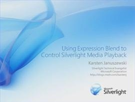In this final part of a five-part series, you'll see how to bring a video into Blend and create a button on top of the video to play it.
Download the sample code
By clicking the link above you ac…
Animating Raster Art for Silverlight with Expression Blend [2007/05/01]In this fourth of a five-part series, we'll create a sequence, wired up through JavaScript, that visualizes the evolution of the chicken from the Tyrannosaurus Rex.
Download the sample code
By cl…
Animating and Clipping Video with Silverlight [2007/05/01]In this session, you'll see how to work with a MediaElement to animate its ambient properties.
Download the sample code
By clicking the link above you accept the
license.
Silverlight Event Handling with JavaScript [2007/05/01]Understanding the event handling model is vital to building interactive experiences. In this video, you'll see how events are hooked up to controls.
Download the sample code
By clicking the link …
Using Silverlight for Full Screen Experiences [2007/05/01]Silverlight supports seamless transition to a fullscreen mode - ideal for media playback. This screencast shows you how.P>
Download the sample code
By clicking the link above you accept the …
Creating a Video Scrubbing Control with Silverlight [2007/05/01]This screencast shows how you can create a custom timeline control that allows you to "scrub" through video during playback and see progress through the video.
Download the sample code…
Building Video Overlays with Silverlight [2007/05/01]This session demonstrates how you can overlay content on top of a live video using the Canvas container and z-ordering.
Download the sample code
By clicking the link above you accept the
licens…
2D Geometries in Silverlight [2007/05/01]In this session, you'll see how the Geometry object can be used for clipping video and for creating arbitrary paths.
Download the sample code
By clicking the link above you accept the
license.
Adding Ink Support to a Silverlight-based Application [2007/05/01]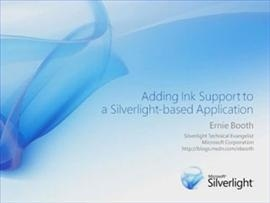See an example of how Silverlight can take advantage of pen input for vector-based inking support.
Download the sample code
By clicking the link above you accept the
license.
Basic Keyboard Input with Silverlight [2007/05/01]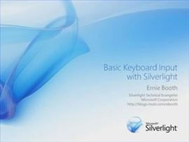Learn how Silverlight supports keyboard accelerator input using scan codes.
Download the sample code
By clicking the link above you accept the
license.
Using the Silverlight Downloader Object [2007/05/01]In this screencast, you'll see how the Downloader object can be used for retrieving assets and XAML as an asynchronous background task.P>
Download the sample code
By clicking the link above …
Using Silverlight Brushes for Color, Gradient and Video [2007/05/01]This screencast shows how you can use brushes to achieve a variety of effects: solid and gradient fills, and even live video fills.
Download the sample code
By clicking the link above you accept …
Beam me over, Scotty: Introducing Transporter Suite [2007/01/22]Just about every corporation has come up against a migration of some sort of the other as they look at deploying some new technology. The Transporter Suite products is new / innovative technology t…
Sharepoint Templates: What. How. Why. [2007/01/22]"Microsoft has created templates for SharePoint Products and Technologies, to help customers jumpstart solutions,
that can be deployed quickly and cost-effectively, while integrating with impo…
Special Holiday Episode IV: Don Box and Chris Anderson [2006/12/25]Keeping up with their tradition,
Don and Chris sing an inspired song for the holidays. Episodes
I,
II and
III are available if you are in the mood for more holiday fun.
Download the song …
Getting Started with "WPF/E" [2006/12/05]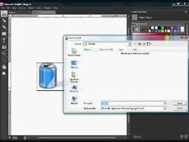In this screencast, Laurence Moroney, “WPF/E” evangelist talks about the development technology stack for “WPF/E” and how the Expression and Visual Studio suites of tools can work together to create…
"WPF/E" CTP Demos [2006/12/05]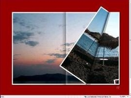In this screencast, Laurence Moroney, “WPF/E” evangelist steps through some very rich and compelling demos of what is possible with “WPF/E”. First is a really cool page turning visualization that ca…
Celso Gomes : Designing in "WPF/E" [2006/12/05]
Ernie Booth and Laurence Moroney visited Celso Gomes, the ‘God’ of “WPF/E” demos who demonstrated how he was able to write some very cool stuff in “WPF/E” including the page turning sample and some…
Joe Stegman talks about the "WPF/E" CTP [1:03:50] [2006/12/05]
This is it! The 1000th video posted to Channel 9 and what more fitting than a video covering
“WPF/E”, a new way to video on the web.
Ernie Booth and Laurence Moroney visited Joe Stegman, lead PM…
Imagining the Imagine Cup [2006/08/09]Meet
Joe Wilson. His team thinks up and runs the
Imagine Cup. What’s the Imagine Cup? Why? Here, Joe answers these questions and takes us around to see the Software Design competition rooms explai…
Reskin Your Application with the KevinButton [2006/08/05]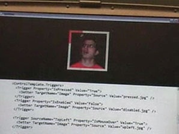With Windows Presentation Foundation, we want to make it possible for you to build a more emotional connection with your users. In this video,
Kevin Moore and
Robby Ingebretsen take this to its e…
Custom PC Contest [2006/07/06]
Update: July 5th, 2006Thank you for all of your creative entries. As announced in the 10 Version 1.0 post, we have a winner! Congratulations Maxwell you are now the proud owner of a custom PC and th…
Lewis Levin on Office Business Applications [2006/06/13]Lewis Levin, Corporate VP, discusses the Office Business Applications Strategy. He talks about how to use Office as a way to integrate with back end ERP and CRM systems, and what is coming for dev…
A few small changes and the Weekly videos [2006/06/01]
Some of you have noticed that the weekly feed is now returning the daily entries and that we have not published a new weekly compiled video in a few weeks. We've been making a few small changes for t…
10 site redesign [2006/05/05]
You may have already noticed, but we've updated the 10 site! This update marks the graduation of 10 from a video blog (with some hidden blogs) to a full network of blogs.Notice the new Media section w…
Party on the 10 island! [2006/04/20]
Come and meet the people behind the 10 show! If you're fan of the show or just curious what it is stop by our 10 island in Second Life and say Hello. And make sure to bring your coolest creations o…
Wallpapers for 10 [2006/04/18]
We've posted 2 wallpapers today available on the downloads page. The first one was made available during the preview week of 10 and the second, a cool collage of images from the first 4 weeks of the …
Mix06 Thailand Demo [0:22:40] [2006/04/04]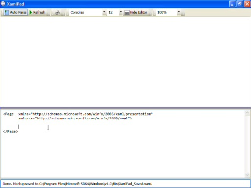
In this video, Fil Fortes provides a great overview of using Windows Presentation Foundation to create a vacation travelogue. Starting with a blank document, he builds a solution up using XAML,…
Open XML File Formats [0:17:26] [2006/03/22]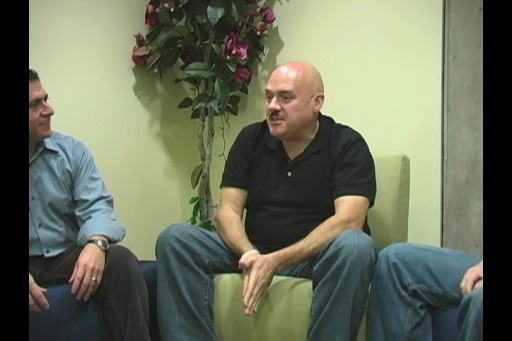
Ofice 2007 has new file formats for Word, Excel and Powerpoint, based on industry-standard ZIP and XML technologies. These formats were getting a lot of attention at the Office Devcon, where Bill…
Official Rules for the Custom "10" PC Contest [2006/03/18]
And here are the official rules for the Custom "10" PC contest:PROGRAM DESCRIPTION: The Microsoft " Microsoft 10 " Contest (the "Contest") is a skill contest in which pa…
Content Suggestions [2006/03/17]What do you want to see on 10? We've already gotten some great ideas but we'll dedicate this entry to your suggestions. Fire away!
Welcome to the 10 News blog! [2006/03/17]
Here you will find news about 10. News about the site itself regarding new features, bugs and different ways to use the site. News on the cast and crew, possible content updates and events. News on…
Clipster is here! [2005/10/13]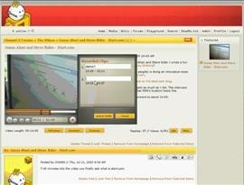The Clipster is a personal video recorder for video blogs like Channel 9 that we’ve integrated into our embedded media player.
How do I use it?
It is so easy! We’ve added a red record button…
Data Binding in Windows Presentation Foundation [2005/09/07]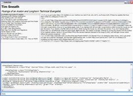Tim Sneath shows how to build a basic RSS reader using Windows Presentation Foundation (formerly codenamed “Avalon”) in just 14 lines of code, using the data binding and XAML features that are central…
Introduction to XAML [2005/09/07]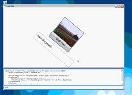In this screencast, Tim Sneath shows with a quick examples how the XAML feature of Windows Presentation Foundation (formerly codenamed “Avalon”) allows you to build UI that integrates 2D, media and te…
Looking at the Master Page [2005/09/03]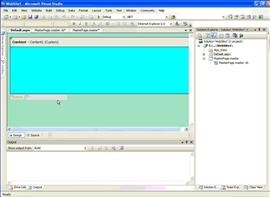If you have been developing with ASP.Net you may have used some custom built page templating system. Now in ASP.Net 2.0 the templating functionality is built in and its called
Master Pages. Tho…
Introducing the Class Designer [2005/09/02]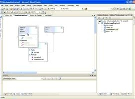Thom Robbins introduces us to the new Class Designer in VS2005. Looks like someday you'll only need a TabletPC and an ink pen to "draw" your application. Who needs a keyboard?
Exploring the Data Source Window [2005/08/26]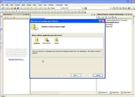Thom Robbins shows off the new Data Source Configuration Wizard and how VS 2005 can get your datagrid connected faster than ever. Notice the Object as a choice for data sources, good stuff!
The Return of Edit and Continue [2005/08/26]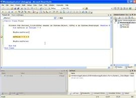Thom Robbins demonstrates that Edit and Continue has indeed returned in VS 2005.
Exploring ClickOnce [2005/08/26]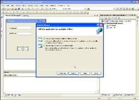Thom Robbins shows us easy it is to leverage ClickOnce as a deployment model for Windows Applications in .Net 2.0